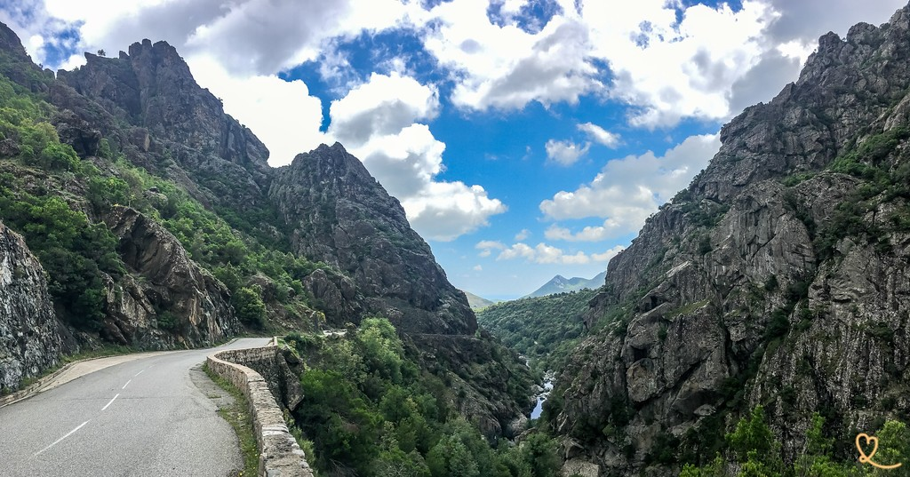

A Défilé de l'Inzecca legfőbb különlegessége és misztikus atmoszférája a medrét alkotó kőzetanyag rendkívüli eredetében rejlik. A szurdokfalak nem a szigeten szinte mindenhol domináló, durva szemcséjű gránitból állnak, hanem egy mély földtani metamorfózison átesett, szerpentin jellegű, olívazöld és feketés árnyalatokban játszó kőzettestből. Ha az utazó közelebbről is megvizsgálja ezeket a monumentális falakat, feltárul a kőzet pikkelyes, szinte organikus felületi textúrája, amely a ráeső napfényben selymes fénnyel csillan meg. Ez a ritka geológiai formáció látványos bizonyítéka annak, hogy Korzika nem egyetlen homogén tömbből áll, hanem különböző tektonikus történetek és mélytengeri kőzetlemezek drámai találkozási pontja, ahol a szűk átjáró falai között felerősödő visszhangok még inkább fokozzák a mélybe vezető, beavató térélményt.
A szurdok alján rohanó Fium'Orbu folyó hihetetlen és megállíthatatlan erőt képvisel, amely évezredek kitartó munkájával valósággal megskalpolta ezt a kemény kőzetvilágot. A víz nem csupán átfolyik a völgyön, hanem aktív szobrászként formálja azt: a mederben szűk kanyonok, tükörsima, áramvonalasra csiszolt sziklafelületek és mélyre vágott üstök tanúskodnak a folyó pusztító és teremtő energiájáról. A csapadékosabb téli időszakokban vagy a tavaszi olvadáskor a víz megduzzadt zaja és morajlása szinte félelmetes módon veri vissza magát a függőleges sziklafalakról, míg a szárazabb nyári hónapokban a lecsendesedett folyó feltárja a meder legrejtettebb anatómiáját. A zöldes tónusú sziklák és a kristálytiszta folyó egymásra hatása ekkor hozza létre azt a jellegzetes smaragdzöld izzást, amely az Inzecca szurdokát a fotográfusok és a természet szerelmeseinek zarándokhelyévé teszi.